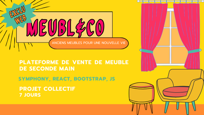
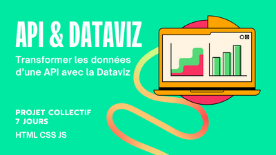
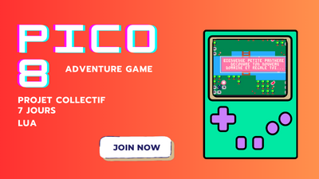

Mes projets
Te voilà arrivé sur ma page Projets. Ici tu trouveras tous ce que j'ai pu faire depuis 2024. Certains projets ont été faits dans le cadre de ma formation: ceux-là ont été réalisés en équipe en 7 jours ouvrés. Si un projet t'intéresses, tu peux aller voir le code dans le repo GitHub associé en cliquant dessus. Et si ça t'inspires, contacte-moi pour un projet !
Un projet ?Dis le moi !


Création d'un site e-commerce
🔎 Voir sur GitHub
🔎 Voir sur GitHub
Code à débugger + ajout de fonctionnalités
🔎 Voir sur GitHub
🔎 Voir sur GitHub
Traduction de la sélection vers le morse (dictionnaire intégré) ou vers le minion (API)
🔎 Voir sur GitHub

🔎 Voir sur GitHub
Affichage du niveau de la nappe phréatique de Rochefort-du-Gard entre janvier 2014 et 2024
🔎 Voir le projet

🔎 Voir le projet
Mini-jeu d'aventure en Lua. Panthéra doit trouver sa nourriture en évitant les feux de forêts causés par le dérèglement climatique
🔎 Voir sur GitHub
🔎 Voir sur GitHub